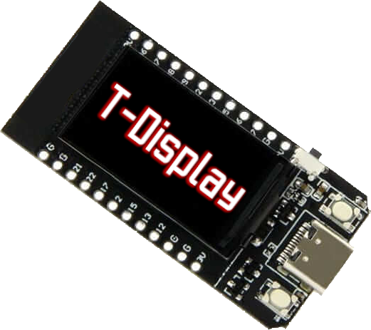
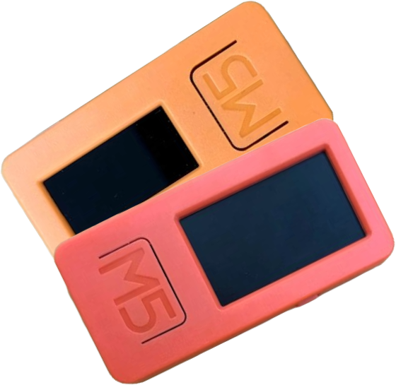

TTGO T-Display Marauder
ESP32 Marauder optimized for the TTGO T-Display board.
Flash Now
View Repo

M5StickC Marauder
Custom firmware for M5StickC & Plus. Wi-Fi attack & scan tools.
Flash Now
View Repo
ESP32-S2 Mini Marauder
Purple ESP32-S2 mini firmware build for Wi-Fi pentesting.
Flash Now
View Repo
ESP32 Wi-Fi Pen Tool
Universal ESP32 Wi-Fi penetration firmware with built-in web UI.
Flash Now
View Repo
CYD – $PANDA Ticker
Live $PANDA token price displayed on your desk via ESP32.
Flash Now
View Repo